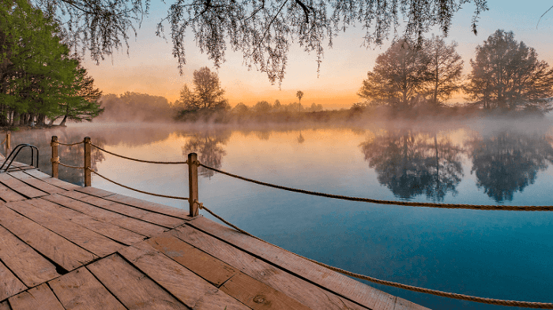
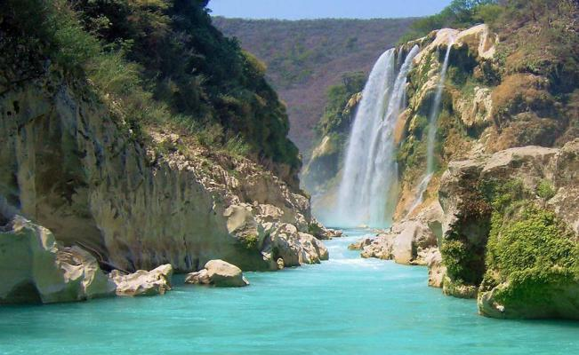
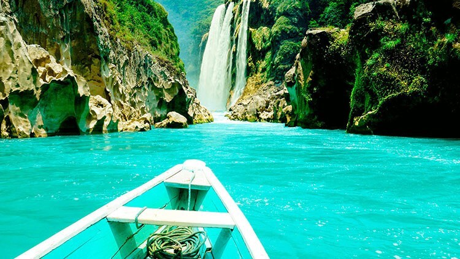
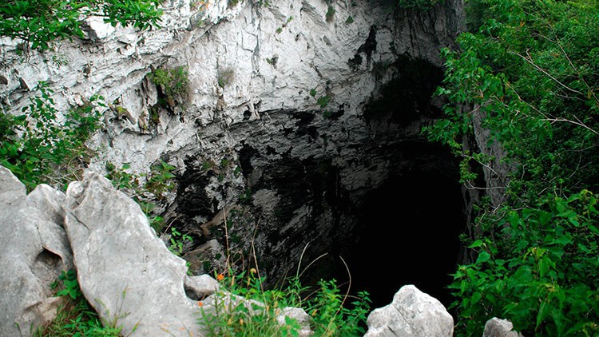
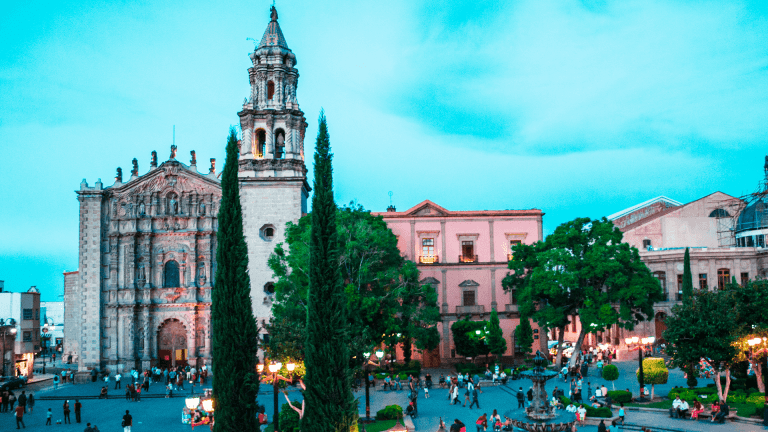

San Luis potosi
Estado Mexicano
San Luis Potosí es una ciudad y municipio mexicano, capital y ciudad más poblada del estado de
San Luis Potosí, La ciudad se encuentra en la zona centro norte del estado, sede de los poderes ejecutivo,
legislativo y judicial del estado. Cuenta con una altitud media sobre el nivel del mar de 1860 msnm.
Desde 2005, la mancha urbana colinda con los municipios de Cerro de San Pedro, Villa de Zaragoza,
Soledad de Graciano Sánchez, Mexquitic de Carmona y Villa de Arriaga.
Su población municipal es de 824 299 habitantes,5 su zona metropolitana alcanza una población de
aproximadamente 1,345,443 habitantes,6789 lo cual la ubica como la octava zona metropolitana más poblada de México.
El centro histórico de la ciudad es reconocido como Patrimonio de la Humanidad por parte de la Unesco.
Su importante y acelerado desarrollo industrial ha favorecido de manera positiva en el crecimiento económico
y demográfico de la zona.
Lugares turisticos
-
Rio Verde
Este lugar cuenta con lagunas y manantiales a su alrededor, por lo que es una gran opción para pasar el día con tu familia.
Aquí puedes disfrutar de un picnic en sus espacios o ir a comer a los restaurantes cercanos después de haber paseado por
sus senderos. Se le considera uno de los mejores atractivos naturales en San Luis Potosí gracias a que el precio
de entradas es muy accesible. Con esto haces posible que el viaje no se vuelva caro y poder usar ese dinero en otras
atracciones.

-
Tamauin
Conoce más a fondo de la historia del México prehispánico en uno de los mejores lugares turísticos cerca de San Luis Potosí.
Si te interesa la arqueología y descubrir datos interesantes sobre el pasado de nuestro país, te recomendamos visitar
la Zona Arqueológica de Tamohi y Tamtoc. En estos espacios podrás recorrer diversas construcciones de hace miles de años,
conocer artefactos que se usaban en la vida diaria de los pobladores de la zona y ver más a detalle cómo es que nuestros
antepasados vivían.

-
cascada Tamul
Sumérgete en aguas azúl turquesa en una de las mejores atracciones en San Luis Potosí y relájate mientras disfrutas de
un sonido tranquilo de agua cayendo desde una cascada alta. La cascada de Tamul es una gran opción para aquellos viajeros
que buscan conocer los atractivos naturales de San Luis Potosí.
Eso sí, acuérdate de llevar bloqueador cuando visites una de las cascadas en San Luis Potosí más bonitas.

-
Huasteca Potosina
Seamos honestos, no puedes decir conocer San Luis Potosí si nunca has ido a la Huasteca Potosina y si no has sido testigo de todas
las maravillas que están dentro de ella.
Uno de los lugares de interés más emblemáticos de la zona y al cual se le considera como una de las trece maravillas de México
es el Sótano de las Golondrinas. Aquí puedes descender por más de 512 metros para aventurarte y conocer más de cerca diferentes
especies que viven ahí.
Además, gracias a su extensa vegetación, este es de los mayores atractivos turísticos en San Luis Potosí.
Si quieres conectar con la naturaleza y maravillarte por ella, definitivamente es una gran opción para visitar.

-
Plaza del Carmen
Este espacio imperdible es uno de los lugares más bonitos de San Luis Potosí, ya que en él se encuentran diferentes puntos icónicos
de la ciudad, tales como el Museo del Virreinato, el Museo de la Máscara y el Teatro de la Paz.
Caminar por sus andadores será uno de tus momentos favoritos durante tu viaje, ya que el ambiente que se respira en el centro de la
ciudad es bastante tranquilo y ameno. Cuando termines de pasear, te recomendamos entrar a alguno de los restaurantes cercanos y probar
la deliciosa gastronomía potosina.
